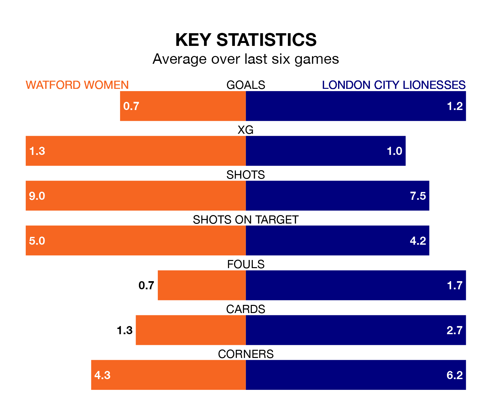

Sunday's early match at Grosvenor Vale sees two relegation candidates play each other, as bottom of the table Watford Women host ninth-placed London City Lionesses.
Watford have picked up five points from their first five FA Women's Championship games, with one win and two draws.
That is six points less than the Lionesses have collected, having won three and drawn two.
Watford are in terrible form in the FA Women's Championship, with no wins and a draw from their last six games.
With two wins and four losses over that period, London City's form is better – they have taken six points from 18, compared to the hosts' one.
With 11 goals in 11 games so far this season, Watford are scoring at below the league average rate with 1.0 goals per game. And they are conceding more than average, letting in 24 goals at a rate of 2.2 per game.
The Lionesses are also below average scorers, with 1.0 goal per game, compared to a league average of 1.4. They have conceded 1.6 goals per game.
In Carly Johns, Watford have one of the league's most on-form strikers so far this season. She has notched five goals in 11 appearances, to sit fifth in the scoring charts.
Her goal rate of one every 182 minutes is slightly quicker than that of Chantelle Boye-Hlorkah, the away team's top scorer with a goal every 194 minutes, and a total of three goals in eight games.
In the last five years, Watford and London City have played each other on four occasions. They won two each.
On average, Watford scored 1.8 goals and the Lionesses 1.8 in those matches.
Their last meeting was on October 11, when Watford won 3-2 away.
Watford's last match was on November 19, a 3-1 loss against Sheffield United Women, with Harley Bennett getting the goal for Watford.
London City lost 2-1 against Lewes Women last time out, also on November 19, with Paige Satchell on the scoresheet.
